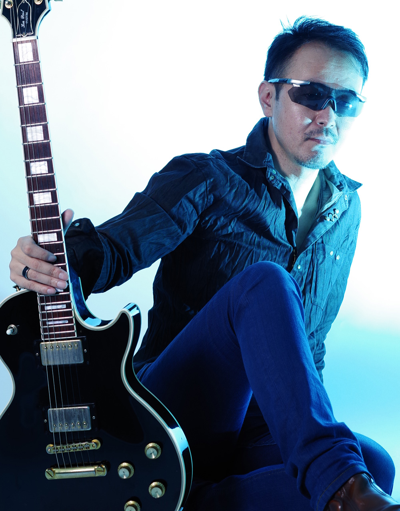

BIOGRAPHY
Megu（Vo）／JM（Key, Prog）／Shinobu（Gt） エレクトロニック・サウンドを軸に活動する音楽ユニット、Genuine Grace。 1998年、ソロユニット「Holy Groove」として活動していたJMが、ヴォーカリストMeguと出逢ったことをきっかけに、独自の音楽性とコンセプトを構築。その後、ギタリストShinobuを迎え、Genuine Graceとして本格的に活動を開始する。 2001年、1stアルバム『A Little Bit Of Heaven』（ライフミュージック）をリリース。インディーズ作品ながら3,500枚を超えるセールスを記録し、日本のCCMシーンに新たなサウンドを提示した作品として注目を集める。共同通信をはじめ、Mac Fan、ファッション誌など各種メディアにも取り上げられた。 2005年、2ndアルバム『AIR』をリリース。 翌2006年、1万曲を超えるデモ音源の中からGenuine Graceの音楽に注目した野口五郎氏のプロデュースにより、「AIR G-mix」の配信を開始。音楽配信ランキング1位を獲得し、5週連続でベスト3入りを果たすなど、大きな反響を呼んだ。さらにテレビをはじめとするメディアにも活動の場を広げる。 2009年、Meguの出産を機にGenuine Graceとしての活動を一度休止。メンバーはそれぞれの音楽活動へと歩みを進める。 そして2019年、14年ぶりとなる新曲を発表。 時代やスタイルにとらわれず、エレクトロニック・サウンドと生楽器、ヴォーカルが交差する独自の世界観を追求しながら、Genuine Graceは再びその音楽を紡ぎ始めた。

JM (Key, Prog)
5月24日生まれ、神奈川県川崎市出身。 幼少期からのプロレスファン。選手の入場曲をきっかけに洋楽に触れ、その一方で、ファミコンサウンド、ダンスミュージック、歌謡曲など、ジャンルにとらわれない多彩な音楽に親しむ。こうしたボーダレスな音楽体験が、現在のサウンドを形づくる原点となっている。 16歳の時、初めて訪れた教会でゴスペルに深い感銘を受ける。なかでもシーケンサーに無限の表現の可能性を見出し、当時としてはまだ珍しかったDTMをゴスペルに取り入れた楽曲制作を始める。 Genuine Grace結成後は、トラックメーカーとしてサウンド面を支える一方、ライブパフォーマンスにも映像を積極的に取り入れ、初期からVJを導入するなど、音楽と映像を融合した表現を追求。既存の枠にとらわれない発想と、時代を先取りするアプローチでユニットの世界観を築いてきた。 近年は、若手アーティストのプロデュースをはじめ、Remix、編曲、楽曲制作など、サウンドプロデューサー／エンジニアとしても活動。自身の名義「JM Remix」では、ジャンルや時代を横断した楽曲制作とYouTubeでの発信を続けている。 自分自身の感性が交わる場所から、新しい音が生まれる。 音楽への探究心と遊び心を忘れず、ジャンルや時代にとらわれることなく、これからも新しい音を創り続けていく。
Megu (Vo)
7月30日生まれ、東京都練馬区出身。幼少期よりクラシックバレエを始め、踊りだけでなく演技や芝居、声
優など幅広い表現を学ぶ。13歳でバレエを断念して以降、勉学に励むが、生きる意味や自分の存在価値につい
て深く悩むようになる。大学合格後、生きる希望を失いかけていた時、祖母が置いていった一枚の紙をきっかけ
に教会へ足を運ぶ。本物の「愛」と出会い、人生は一変、クリスチャンとなる。
東京理科大学卒業後、大学院へ進学。在学中、「歌を通して本物の愛と希望を証しする」というヴィジョンが
与えられ、歌手を志して大学院を中退。音楽専門学校でヴォーカルを学ぶ。
その後、JMとの不思議な出会いによってヴィジョンが形となる。
楽曲制作では、作詞や作曲を担当し、思いの丈を表現している。
現在は、主にラジオパーソナリティとして活動。
活躍するアーティストや楽曲を紹介するほか、日常や心の思いを自由に語っている。
2023年、Megu自身のプロデュースで、「くちづけ〜雅歌1:2」を制作。Megumi
Graceとしてリリース。
とことん自分が表現したいことに拘った渾身の一曲。
聖書の中の一節、「あの方が私に 口づけしてくださったらよいのに。」（雅歌１章２節）からインスピレー
ションを受け、作詞作曲。MVをYouTubeで配信中。

Shinobu (G)
7月4日生まれ、東京都三鷹市出身。 高校時代よりバンド活動を行う。もとは鍵盤志望だったが、当時の小遣いでは高価なシンセサイザーには手が届かず、やむなくエレキギターへ転向。Bruce Springsteen, Sheryl Crowといったアーティストに感銘を受け、高校卒業後から本格的に音楽活動をスタートさせる。 やがてBill EvansやCandy Dulferといったジャズやファンクサウンドにも傾倒してゆくこととなるが、10代の時に毎週聴いていた全米Top40チャートからの影響は大きく、自ら「スタイルが無いのがスタイル」というギターを確立させた。現在、そのスタイルはJMが作り出す多彩なサウンドには欠かせない存在となっている。 バンド外での活動として、赤坂Bliz、Morph-Tokyo等で国内外のシンガーのサポートを行なう。最近では、ブラックゴスペルバンドのギタリストしても活躍。 自称”ライトな健康オタク”。安全な食、お風呂、ジムの3つは生活に欠かせない必須アイテムである。